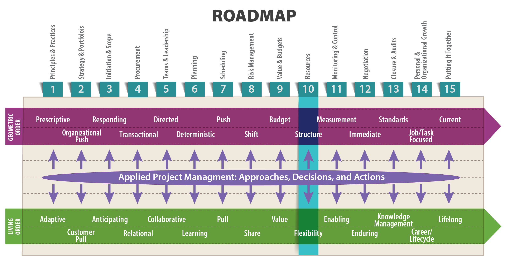

Limitless material resources are not only unavailable most of the time, they may actually be a hindrance. And remaining lean and mean can often be a blessing.
—Michael Gibbert, Martin Hoegl, and Liisa Välikangas (In Praise of Resource Constraints 2007)

Objectives
After reading this lesson, you will be able to
The most detailed schedules and budgets in the world are useless if you don’t have the people, equipment, facilities, and other resources you need, when you need them. In reality, the schedule is only determined after the resources have been assigned. In other words, until you have assigned and committed resources, your project schedule and budget are not fully realized. They are based on assumptions, which are a huge source of uncertainty. This is especially true in the IT world, where productivity can vary so much from one person to another. You can’t really have a clear idea of how fast your team can work until you know who’s on the team.
Acquiring project resources usually involves looking outside the boundaries of the project itself to find what you need. In the early stages, that includes finding the right people for your project team. Inevitably, you will face restrictions on the resources available to you. And yet, to complete a project successfully, you have to figure out how to get the resources you need—people, office space, Internet bandwidth, computer, copper wire, shingles, 3-D modeling equipment, concrete, and so on—when you need them.
That’s why understanding the principles of resource allocation is so essential to successful project management. Most definitions of “resource allocation” describe it as something that takes place on the organization level, as in the following: “Resource allocation is the process of assigning and managing assets in a manner that supports an organization’s strategic goals” (Rouse n.d.). On the project level, resource allocation still involves making choices that support the organization’s strategic goals, but you also have to factor in your project’s more specific goals. In all cases, resource allocation (or resource management as it is sometimes called) includes “managing tangible assets such as hardware to make the best use of softer assets such as human capital. Resource allocation involves balancing competing needs and priorities and determining the most effective course of action in order to maximize the effective use of limited resources and gain the best return on investment” (Rouse n.d.).
Resource management is about making sure you have the resources you need at the right time, but it’s also about avoiding stockpiling resources unnecessarily (and therefore wasting them) and about “making sure that people are assigned to tasks that will keep them busy and not have too much downtime” (Business Dictionary n.d.).
The essence of resource allocation is resource loading, or the process of assigning resources (most often people) to each and every project activity. In resource loading, we look at the tasks involved in the project, and then, using past experience and some judgment, determine how much work (typically measured in person hours) to assign to each resource in order to achieve the desired schedule. In the early stages of a project, resource loading provides a quick check on resource demand and supply. Any indication that demand is tight for a particular resource should serve as a warning that you will have to carefully monitor that resource throughout the project. In any resource loading decision, you need to distinguish between fixed resources (which remain “unchanged as output increases”) and variable resources (which change “in tandem with output”) (Reference n.d.).
The geometric order approach to resource allocation presumes a systematic process, in which you know well in advance which resources you’ll need at any one time and have a clear path to acquiring those resources. This is the ideal situation and is usually the result of years of experience that allow managers to foresee needs way down the road. For example, mature project management organizations know to hire staff in anticipation of upcoming project needs and provide developmental opportunities to challenge and retain their best employees. By contrast, less experienced project management organizations identify project teams on a “just in time” basis that can compromise a project from the beginning.
While having everything you want when you need it is the ideal, it’s rarely the norm in the permanent whitewater of the living order. In a changeable environment, resource allocation is all about adaptation. You might start by planning the necessary resources in a geometric way. However, altering circumstances could mean you need to revise your plan day-to-day. In other words, in living order, you need to actively manage the resources required for your project tasks. You can’t assume that because you’ve made a plan, every person and everything you need will show up on time, according to your plan.
For example, in manufacturing, when installing a new piece of automation, a company absolutely must have maintenance, manufacturing engineers, and control staff available to jump in when they are needed. The schedule might spell out detailed dates, but everyone still has to remain flexible because their piece of the work will affect the overall timeline. Adding to the complexity of the situation, the personnel working on your project may have to be available to staff the rest of the plant. They might suddenly need to postpone work on your automation project in order to work on a crisis affecting a particular customer order.
And keep in mind that from one project to the next, your control over day-to-day assignment of resources could vary considerably. In most situations, project managers need to coordinate, negotiating and contracting with others to get resources when they need them. What’s more, there’s often a time lag between identifying the need for a resource and getting it deployed. This is especially true for research-oriented tasks, in which resolving unknowns sets the pace of progress.
In some situations, you shouldn’t even assume that you know what resources you will need in the first place. It can be hard to accept this fact, even in organizations that have fully embraced living order. In their article “Managing Resources in an Uncertain World,” John Hagel, John Seely Brown, and Lang Davison argue that even the most well-conceived pull plan—a plan informed by the best precepts of Lean—can be limited by the assumption that the planners know exactly what resources they need in the first place. To overcome this challenge, they argue for an even more flexible version of pull planning:
In a world of accelerating change, we no longer can be certain we know what to seek. What happens when we don’t even know that a product or person exists, yet that product or person is highly relevant to our needs of the moment? Lean manufacturing systems at least assume that we know what we need at any point in time…. Increasingly, we need pull platforms that can bring us relevant resources that we did not know existed but are useful to us. They must do this in a scalable fashion as well since the resources may be in a remote part of the world or developed by individuals who are just beginning to become visible with newly acquired skills. In other words, these pull platforms must offer serendipity as well as robust search capability. (Hagel III, Brown and Davison 2009)
Resource allocation occurs within a broader organizational context, subject to pressures that go beyond an individual project. That means that getting and using the resources you need, when you need them, is rarely as simple as it might seem when spelled out in a project schedule. As discussed in Lesson 2, in a well-run organization, project selection is guided by the organization’s overall strategy. The same is true of resource allocation; decisions about what resources will be available to which projects are, ideally, made in alignment with the organizational strategy. For project managers, it’s important to keep this in mind. It might be better for you and your project to have access to a certain resource on a certain day, but that might not necessarily be the best option for the organization as a whole.
Other realities can affect your ability to gain access to and pay for a resource. In the case of a scarce piece of equipment, you might try to reserve it for more time than is strictly necessary, so you can use it when you need it. This allows you to purchase flexibility, but that flexibility might be more expensive than you can afford. However, if you let a critical resource go, you might not get it back when you need it, or you might need to pay a charge for reactivating the resource. In other situations, you may be forced to pay for more than you need. For example, in projects involving union labor, you might have to pay for a half-day of labor for someone to operate equipment that you actually only need for two hours. All of these factors affect the reality of getting a resource, how much it costs, and when it is available.
Another important factor affecting the allocation of resources is the often intense competition for resources within an organization. In an article describing how the pharmaceutical company SmithKline Beecham (SB) improved its resource-allocation process, Paul Sharpe and Tom Keelin acknowledge the realities of intra-organizational competitiveness:
How do you make good decisions in a high-risk, technically complex business when the information you need to make those decisions comes largely from the project champions who are competing against one another for resources? A critical company process can become politicized when strong-willed, charismatic project leaders beat out their less competitive colleagues for resources. That in turn leads to the cynical view that your project is as good as the performance you can put on at funding time…. One of the major weaknesses of most resource-allocation processes is that project advocates tend to take an all-or-nothing approach to budget requests. At SB, that meant that project leaders would develop a single plan of action and present it as the only viable approach. Project teams rarely took the time to consider meaningful alternatives—especially if they suspected that doing so might mean a cutback in funding. (1998)
The improved resource allocation process that Sharpe and Keelin developed was systematic and value-driven, but the key to their approach came down to one thing: better communication among project managers and other stakeholders. This, in turn, allowed them to trust each other, so they could turn their attention to the company’s overall strategic goals rather than skirmishing over available resources. Sharpe and Keelin found that “by tackling the soft issues around resource allocation, such as information quality, credibility, and trust, we had also addressed the hard ones: How much should we invest and where should we invest it?”
In other words, resource allocation is yet another area of project management in which good communication can help smooth the way to project success.
Resource allocation is inextricably tied up with risk management. If you fail to secure the resources you need, when you need them, you risk delays, mounting costs, and even project failure. Two of the most common ways that a needed resource can suddenly become unavailable to your project are
In an article for TechRepublic.com, Donna Fitzgerald explains the distinction:
An individual can theoretically be over-allocated to many projects; an individual can be overcommitted only to a specific body of work.
The reason for this distinction is that over-commitment and over-allocation really are two separate problems. If an individual is assigned a task and the work on that task turns out to be twice the effort originally estimated—and the project duration isn’t moved out—the individual is overcommitted. If a person is allocated to multiple projects, then it’s an issue of over-allocation. I believe that problems arise because of a failure to admit that a single person can’t be in two places at the same time. (Fitzgerald 2003)
Fitzgerald argues that over-commitment is a problem that a project manager can typically resolve within the confines of individual projects. Over-allocation, by contrast, is something that can only be fully solved “at the organizational level…by establishing clear project priorities and a clear process for mediating the inevitable conflict in priorities” (Fitzgerald 2003). The unfortunate fact is that if you face an organization-wide over-allocation problem, you may have no option but to deal with it as best you can. Successful project managers learn to ride the waves of over-allocation whitewater, making do with the resources made available to them:
In the final analysis, resource overallocation is a failure of prioritization, a failure of planning, and a failure to accept that reality always imposes constraints. The nimble project manager understands that things will always change and that even in the best of systems there will be times when multiple projects are competing for the same resource. The only way to really solve this problem is by eliminating unnecessary conflicts in the initial planning stages through prioritization and project timing and by establishing the discipline to make conscious decisions about which projects slip and which stay on track when Murphy’s Law comes into play. (Fitzgerald 2003)
But is there something individual project managers can do to prevent over-allocation from causing havoc with their projects? Fitzgerald suggests that you start by learning more about how resources are allocated in your organization. A good way to do this is to recruit “other project managers into a Community of Practice” as she explains in this helpful article: http://www.techrepublic.com/article/with-a-little-help-from-my-friends-exploring-communities-of-practice-in-project-management/. Fitzgerald argues that such groups can go a long way towards resolving all sorts of project team rivalries, including rivalries involving resource allocation:
The key is to get a group of PMs together and to establish a planning committee that would work to keep PMs from stepping all over one another. Simply making the decision to avoid letting the situation reach the crisis point and to open up the communication channels will begin to reduce the probability that resources are mythically overallocated. (Fitzgerald 2003)
Fitzgerald also suggests applying risk management techniques to critical resources from the earliest days of project planning:
As a general practice, I begin every project by identifying my critical resources and developing a contingency plan for replacement or substitution of those resources in the event of an emergency…. By establishing nothing more than the most minimal practice of risk management, you can ensure that resource problems are brought to light early in the project life cycle rather than later when the solutions are more limited and more expensive. (Fitzgerald 2003)
So far, we’ve focused on several ways living order can disrupt your best-laid resource allocation plans. But that’s not to say that, when thinking about resources, you should dispense with careful, geometric-order planning. Far from it. In the next two sections, we look at some helpful resource-optimization techniques.
Two important resource allocation tools available to a project manager are resource leveling and resource smoothing. These techniques make use of slack (also called float) which, as you learned in Lesson 7, is the amount of time that a task can be delayed without causing a delay to subsequent tasks or the project’s completion date. Understanding the distinction between the resource leveling and resource smoothing can be tricky, so let’s start with basic definitions:
Because of the complexities involved, both resource leveling and resource smoothing are typically done using project management software such as Microsoft Project. A blog post for the Association for Project Management distinguishes between resource leveling and resource smoothing as follows:
Resource smoothing is used when the time constraint takes priority. The objective is to complete the work by the required date while avoiding peaks and troughs of resource demand. Resource leveling is used when limits on the availability of resources are paramount. It simply answers the question “With the resources available, when will the work be finished?” (Association for Project Management n.d.)
In resource leveling, the project manager moves resources around in the schedule in order to level off some of the peaks and valleys of resource requirements. Task start dates are modified as necessary to use slack wherever possible to reduce resource conflicts. If necessary, activity start dates are shifted further to eliminate resource constraints; these shifts beyond initial slack constraints extend the duration of the project. You can see some examples of resource leveling here: http://www.mpug.com/articles/resource-leveling-best-practices/.
Even after judicious resource leveling, you may still find that demand for one or more resources exceeds existing constraints in order to meet a schedule requirement. For example, you might find that you simply don’t have enough experienced electricians on-staff to complete a task by a fixed milestone date. In that case, you will need to consider adding resources to the project—for example, perhaps by hiring some electricians from another firm. But remember that bringing on new resources may temporarily slow the project due to the time it takes for both the project team and the new resource to adjust. When facing insurmountable resource constraints, you might find that you simply have to extend the schedule or modify the project’s scope.
Note that resource leveling, as described here, is rarely appropriate in the world of software development projects. Unless the people on the project have experience that is relevant to the tasks to be accomplished and have worked on similar projects with well-defined scope, then resource leveling may not prove useful. However, resource leveling can be useful in software consulting firms that perform system upgrades for clients and have established a repeatable process for doing the upgrade.
Managers often assume that the schedule compression techniques discussed in Lesson 7 can have the side benefit of reducing indirect costs for resources like maintenance personnel, administrative staff, or office space. This is true in some fields, making it a very useful option. But it doesn’t typically work in the IT world, as documented by Steve McConnell in his book Rapid Development: Taming Wild Software Schedules. He explains that focusing too much on schedules at the expense of other resource-intensive work such as planning and design will almost always result in a late project:
You can use the strongest schedule-oriented practices, but if you make the classic mistake of shortchanging product quality early in the project, you’ll waste time correcting defects when it’s most expensive to do so. Your project will be late. If you skip the development fundamental of creating a good design before you begin coding, your program can fall apart when the product concept changes partway through development, and your project will be late. And if you don’t manage risks, you can find out just before your release date that a key subcontractor is three months behind schedule. You’ll be late again. (1996, 9)
In Lesson 7 you learned about the critical path method of schedule management, which helps identify the minimum total time required to complete a project—that is, the critical path. This way of thinking about a project focuses on finding the right order for tasks within the schedule. By contrast, a related scheduling method, the critical chain method (CCM), focuses on the resources required to complete a project, adding “time buffers to account for limited resources” (Goodrich 2018). Critical chain management was first introduced by Eliyahu M. Goldratt in his 2002 book Critical Chain. To learn more about this important topic, start by reviewing this summary: https://www.simplilearn.com/what-is-critical-chain-project-management-rar68-article. This helpful video explains the basic concepts related to the critical chain method: https://www.youtube.com/watch?v=mpc_FdAt75A.
In theory, resource management in Agile should be simple. After all, in Agile, resources and time are usually fixed. The team has a fixed budget, a fixed number of programmers, and a fixed amount of time to create working software. The variable in all this is the software itself. Throughout the cycle of sprints—as the customer tries out new software, and requests alterations—the software features can change dramatically. When the budget is exhausted, the project ends. But because Agile developers create working software bit-by-bit, the customer is assured of having at least some usable features by that point.
So again, resource management in Agile should be simple—in theory. But in reality, the key resource in software development is the people who create the software. And as you learned in the discussion on teams in Lesson 5, where people are concerned, things rarely go as planned. Some programmers work faster than others, and individuals can vary tremendously in their output from one week to the next, especially when dealing with personal problems, like illness or family conflict. Robert Merrill, a Senior Business Analyst at the University of Wisconsin-Madison, and an Agile coach, puts it like this:
Agile is more about people than computers. People are not interchangeable, they have good days and bad days. They get along or they don’t. Cognitive abilities vary tremendously. If you aren’t successful in helping teams gel and stay focused, you’re going to spend lots of extra money, or the project may blow up. You need to get the teams right. (Merrill 2017)
As Gareth Saunders explains in a thoughtful blog post on the topic, this is all complicated by the amount of “business as usual” tasks that developers typically have to fit into their schedules on top of their work on specific Agile projects. This includes tasks like “admin, team communications, support, mentoring, meetings, and consultancy—offering our input on projects managed by other teams” (Saunders 2015). As a result, as a project manager, Saunders struggles to answer the following questions:
Again, in theory, this should not be difficult. If you have, for instance, “five developers, each with 6 hours available for work each day. That gives us 30 hours per day, and assuming 9 days of project work (with one full day set aside for retrospective and planning) then within each two-week sprint we should be able to dedicate 270 hours to development work” (Saunders 2015). In reality, however, business as usual tasks can eat up 40% of a programmer’s working week, with that percentage varying from week to week or month to month.
Difficulties in estimating a team member’s capacity for work on a project is something every project manager faces. But in Agile, estimating capacity can be especially difficult. As you learned in Lesson 5, in Agile, project managers (or Scrum masters) ideally exert minimal direct influence on day-to-day work, because teams are supposedly self-organizing—that is, free to manage their work as a group, and pull work when they are ready for it. This means Agile project managers need to take the long view on resource management by practicing good resource capacity management, which involves “planning your workforce and building a skill inventory in exact proportion to the demand you foresee. It lets you optimize productivity and as a concept perfectly complements the Agile methodology” (Gupta 2017).
Interested in learning more about managing resources in Agile? Start with these links:
When making decisions about resources, you may naturally focus on what will allow your team to finish a project as quickly and efficiently as possible. As a result, you might be tempted to make decisions that use more fuel than is strictly necessary, exploit cheap labor, or pollute a local lake. But that approach fails to take into account the longer view on personal and organizational responsibility that lies at the core of the sustainability movement.
John Elkington introduced the term triple bottom line (TBL) as a way to broaden corporate thinking about the cost of doing business to include social and environmental responsibilities. Rather than focusing solely on profit and loss, Elkington argued that organizations should pay attention to three separate bottom lines:
One is the traditional measure of corporate profit—the “bottom line” of the profit and loss account. The second is the bottom line of a company’s “people account”—a measure in some shape or form of how socially responsible an organization has been throughout its operations. The third is the bottom line of the company’s “planet” account—a measure of how environmentally responsible it has been. The triple bottom line (TBL) thus consists of three Ps: profit, people, and planet. It aims to measure the financial, social, and environmental performance of the corporation over a period of time. Only a company that produces a TBL is taking account of the full cost involved in doing business. (The Economist 2009)
More and more, organizations are incorporating sustainability concerns into their long-term strategies, in part because their customers demand it, and in part because the sustainable choice often turns out to be the profitable choice. If you are lucky enough to work for an organization that is fully invested in its triple bottom line, you will be encouraged to make resource allocation decisions that reflect sustainability concerns. If your organization isn’t there yet, consider staking out a position as an agent of change, educating colleagues about the benefits of the triple bottom line. You can start by educating yourself. The following resources are a good first step:
As an executive concerned with the well-being of an entire organization, John Nelson has to look at resource management on a portfolio level. Whereas individual project managers naturally focus on short-term resource availability for their projects, an executive’s goal is ensuring that resources are available for many projects over the long term. In a recent lecture, he offered some thoughts on managing resources at the portfolio level:
Whether you’re deploying capital resources, outside resources, or your own internal staffing resources, it’s almost axiomatic that you will face resource constraints in living order. When considering how a particular project fits within a larger portfolio, you need to keep in mind the organization’s resource elasticity, and the organization’s ratio of percentage of creative personnel.
Let’s start with resource elasticity. Organizations can be whipsawed by projects that are so large they consume a disproportionate amount of the organization’s resources. If a project like that ends abruptly, for an unexpected reason, the organization will struggle to get project resources redeployed. To avoid this, it’s a good idea to make sure no project exceeds one-third (or in some cases one-fourth) of the organization’s total capacity.
Now let’s consider the critical ratio of creative people to people who excel at execution. Some projects require a lot of creativity and thinking. Some just require execution. If you have a portfolio of highly creative assignments, but a resource base that’s largely execution-oriented, you’re going to struggle. The opposite is also true: if you have lots of execution-oriented projects with only highly creative people on staff, you might complete the project successfully, but you’ll probably burn through resources faster than you want, because creative people aren’t as efficient and effective at execution. It almost goes without saying, though, that you do have to have creative people in your organization. In living order, it’s rare that I come across a project that doesn’t involve any creative people. My rule of thumb is to have about 30% of my staff to be highly creative. This has worked well for me, although sometimes 40% or even 50% is best.
You have to keep these kinds of concerns in mind as you look at projects in portfolios, at the organizational level, to make sure that over the long term you have a reasonable chance of meeting the value proposition, meeting the customer’s expectations, and maintaining the health of your organization. (Nelson 2017)
A project manager with a serious appreciation for living order understands that external factors may fluctuate during project execution, making previously widely available resources impossible to obtain. For example, there may be a run on certain materials, or a certain type of expertise might suddenly be consumed by an emergency somewhere in the world. Any development like this can force you to rethink your original expectations. You need to be prepared to adapt your budget, scope, and schedule to the realities that evolve during project execution.
Keep in mind that resources can become suddenly scarce. For example, right now materials engineers are a hot commodity, because more engineers are retiring than entering this field. Compounding the problem, new designs and manufacturing techniques have expanded the need for materials engineers. A 2018 check of Indeed.com turned up over 47,000 openings for materials engineers. As you might expect, new engineering students are responding to the call. At the UW-Madison, enrollment in this area of engineering has grown dramatically. But it will still be a while until there is enough materials expertise to go around.
And keep in mind that a constraint on the availability of resources is not necessarily the worst thing that can happen to an organization or to an individual project. In fact, the origins of Lean and the Toyota Production System can be traced back to resource constraints in Japan at the end of World War II. In an article for MIT Sloan Management Review, Michael Gibbert, Martin Hoegl, and Liisa Välikangas argue that abundant resources can sometimes stifle innovation:
Resource constraints fuel innovation in two ways. In a 1990 article in Strategic Management Journal, J.A. Starr and I.C. MacMillan suggested that resource constraints can lead to “entrepreneurial” approaches to securing the missing funds or the required personnel. For example, the Game Changer innovation program of Royal Dutch Shell Plc long operated on the shoulders of its social network, which allowed innovators to find technically qualified peers willing to contribute to their efforts on a complimentary basis. In other words, individuals innovate despite the lack of funding by using social rather than purely economic strategies. Thus tin-cupping, horse trading, boot strapping, and currying personal favors partly or wholly substitute for economic transactions in which non-entrepreneurial innovators (or those less socially connected) would pay the full price.
Such efforts speak for “resource parsimony”—deploying the fewest resources necessary to achieve the desired results. For instance, new product development teams might use testing equipment on weekends, when it is readily available and free. Likewise, team members might know engineers or other professionals—say, from supplier firms involved in past projects—who would be glad to give informal design reviews in anticipation of future remunerative work.
Resource constraints can also fuel innovative team performance directly. In the spirit of the proverb “necessity is the mother of invention,” teams may produce better results because of resource constraints. Cognitive psychology provides experimental support for the “less is more” hypothesis. For example, scholars in creative cognition find in laboratory tests that subjects are most innovative when given fewer rather than more resources for solving a problem.
The reason seems to be that the human mind is most productive when restricted. Limited—or better focused—by specific rules and constraints, we are more likely to recognize an unexpected idea. (Gibbert, Hoegl and Välikangas 2007)
Gibbert et al. argue that managers with access to all the resources they could possibly want tend to fall into the trap of throwing money at problems, rather than sitting down to think of effective solutions to the kinds of problems that arise in the permanent whitewater of the modern business world. Then, when projects fail, “rationalizations often start with excuses such as ‘We ran out of money’ or ‘If only we had more time.’ In such cases, the resource-driven mindset may well have backfired. Resource adequacy is in the eye of the beholder, and if a team has the perception of inadequate resources, it may easily be stifled.”
Gibbert et al. describe several projects in which resource constraints turned out to be a blessing, not a curse. For example:
In the post–World War II era, several American teams under General Electric Co., and several German teams under Bayerische Motoren Werke AG were competing against each other in a race to resolve the jet engine performance dilemma. The stakes were high, given that the Cold War had started and the West was eager to come up with reliable jet technology before the Soviet Union did. The German team eventually won by proposing a radical departure from the status quo, an innovation that is in fact is still used today. It developed a “bypass” technology in which the rotor blades and other engine parts most exposed to high temperatures were hollowed out so that air could flow through them, thereby cooling them off.
Whence this idea? The American team had a virtual blank check to buy whatever costly raw materials it needed to create the most heat resistant alloys (the Cold War jet propulsion development program cost the U.S. government nearly twice as much as the Manhattan Project). The German team, by contrast, was forced to rely on cheaper alloys, as it had significantly less funding at its disposal and simply couldn’t afford the more expensive metals. (Gibbert, Hoegl and Välikangas 2007)
Don’t underestimate the management hours required to keep track of a high number of resources. For example, an experienced manager of engine-related projects reported that more than 50 core team members was too many for one project manager to keep track of. With over 50 team members, the burden of coordination and communication often outweighed the benefit of extra resources.
In their book Becoming a Project Leader, Alexander Laufer, Terry Little, Jeffrey Russell, and Bruce Maas discuss the benefits of proactive resilience—taking timely action to prevent a crisis, often by introducing a change that upends the usual way of doing things. In living order, where resource availability is never a given, proactive resilience is an essential component of good resource management.
As an example of proactive resilience in action, Laufer et al. describe the work of Don Margolies, a project manager in charge of NASA’s Advanced Composition Explorer, a robotic spacecraft launched into orbit in 1997 to collect data on solar storms. At one point, facing a $22 million cost overrun related to the development of nine scientific instruments, his dramatic intervention ultimately saved the project:
Don concluded that unless he embarked on an uncommon and quite radical change, the project would continue down the same bumpy road, with the likely result that cost, and time objectives would not be met. To prevent this, he made an extremely unpopular decision: He stopped the development of the instruments, calling on every science team to revisit its original technical requirements to see how they could be reduced. In every area—instruments, spacecraft, ground operation, integration and testing—scientists had to go back and ask basic questions, such as “How much can I save if I take out a circuit board?” and “How much performance will I lose if I do take it out?”
At the same time, Don negotiated a new agreement with NASA headquarters to secure stable funding, detached from the budget of the other six projects affiliated with the Explorers program. To seal the agreement, he assured them that by reducing his project’s scope, it would not go over budget. With the reduced technical scope and the stable budget, the ACE project gradually overcame both its technical and organizational problems. Eventually, it was completed below budget, and the spacecraft has provided excellent scientific data ever since. (Laufer, et al. 2018, 57)
Resource parsimony is not the answer to every resource allocation problem, but it can definitely stimulate new and effective approaches that might otherwise go undiscovered. In the same way, the many living order challenges facing today’s organizations can encourage managers to develop new ways to manage resources.
Resourcing isn’t just for your team—it applies to the rest of your company too. Think beyond project life cycle planning; when allocations are visible to everyone, the entire agency can see how pieces fit together and where their “quick tweaks” or internal projects align with the grand scheme of things. This can significantly cut down on emails, facilitate conversations that would otherwise require rounds of meetings, and serve as a precursor to monthly budget reviews or executive presentations. A resourcing system visible to key parties and departments, and sortable by tasks and skills, can help tremendously while preparing budgets and schedules. Top project managers make sure the bigger picture is always in perspective. (MICA 2014)
Association for Project Management. n.d. “Difference Between “Resource Smoothing” and “Resource Leveling”.” apm.org. Accessed July 15, 2018. https://www.apm.org.uk/content/resource-smoothing.
Business Dictionary. n.d. “Resource Management.” Business Dictionary. Accessed July 15, 2018. http://www.businessdictionary.com/definition/resource-management.html.
Fitzgerald, Donna. 2003. “The Keys to Resource Allocation.” Tech Republic, April 21. http://www.techrepublic.com/article/the-keys-to-resource-allocation/.
Gibbert, Michael, Martin Hoegl, and Liisa Välikangas. 2007. “In Praise of Resource Constraints.” MIT Sloan Management Review (Spring). http://sloanreview.mit.edu/article/in-praise-of-resource-constraints/.
Goodrich, Belinda. 2018. “Critical Path vs Critical Chain.” PM Learning Solutions. PM Learning Solutions. https://www.pmlearningsolutions.com/blog/critical-path-versus-critical-chain-pmp-concept-17.
Gupta, Aakash. 2017. “Resource Capacity Planning For Agile Teams.” PM. September 19. https://project-management.com/resource-capacity-planning-for-agile-teams/.
Hagel III, John, John Seely Brown, and Lang Davison. 2009. “Managing Resources in an Uncertain World.” Harvard Business Review. https://hbr.org/2009/02/the-potential-of-pull.
ITtoolkit. n.d. “How to Use Resource Leveling for Project Planning and Scheduling.” IT Toolkit. Right Track Associates, Inc. Accessed July 15, 2018. https://www.ittoolkit.com/articles/resource-leveling.
Laufer, Alexander, Terry Little, Jeffrey Russell, and Bruce Maas. 2018. Becoming a Project Leader: Blending Planning, Agility, Resilience, and Collaboration to Deliver Successful Projects. New York: Palgrave Macmillan.
McConnell, Steve. 1996. Rapid Development: Taming Wild Software Schedules. Redmond, WA: Microsoft Press.
Merrill, Robert, interview by Ann Shaffer. 2017. Senior Business Analyst, University of Wisconsin-Madison (October 2).
MICA. 2014. “5 Ways Top Project Managers Allocate Their Resources.” ResourceGuru Blog. December 11. https://blog.resourceguruapp.com/5-ways-top-project-managers-allocate-their-resources/.
Nelson, John. 2017. “Strategies for Ensuring Critical Resouces are Available When Needed.” Lecture for EPD612: Technical Project Management, University of Wisconsin-Madison,. November 8.
Reference. n.d. “What is a fixed resource and a variable resource?” Reference.com. IAC Publishing, LLC. Accessed July 15, 2018. https://www.reference.com/world-view/fixed-resource-variable-resource-697cdbe590688ff.
Rouse, Margaret. n.d. “Definition: resource allocation.” TechTarget. Accessed July 15, 2018. http://searchcio.techtarget.com/definition/resource-allocation.
Saunders, Gareth. 2015. “The challenges of resource management in our Agile team.” Digital Communciations. November 9. http://digitalcommunications.wp.st-andrews.ac.uk/2015/11/09/the-challenges-of-resource-management-in-our-agile-team/.
Sharpe, Paul, and Tom Keelin. 1998. “How SmithKline Beecham Makes Better Resource-Allocation Decisions.” Harvard Business Review. https://hbr.org/1998/03/how-smithkline-beecham-makes-better-resource-allocation-decisions.
The Economist. 2009. “Triple bottom line.” The Economist, November 17. https://www.economist.com/node/14301663.